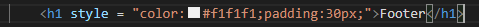
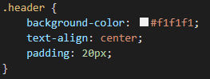

Inline CSS Method is used within a HTML element and you add the style attribute to each HTML tag without using selectors. This method isn't used much as you need to add a style to each HTML tag which isn't time effecient or resource efficient. It can be useful in some situations such as applying the style to only one element.
Below is an example of what an inline method looks like for better understanding:
As you can see, it creates a style for the content of the footer by styling the colour and the padding and is used within the HTML element.
An advantage of inline method would be that it is quick and easy to implement CSS styles to a HTML element if something is missed or if a style is specific to only one HTML element. Another advantage would be that you don't need an external web page or source and can implement it on your page.
A disadvantage of inline method would be that it wastes time adding a CSS style to each HTML element, it is also a waste of data as you are adding more code which costs data and it also makes the structure of your HTML untidy.
Embedded CSS Method is the use of the style tag inside the head tag or section of a HTML document. It used mainly to create the style of a single page as it is time effecient, however, if you wish to use this method for multiple pages, then it can be very time consuming as you have to create CSS style for each page.
Below is an example of what an embedded method looks like for better understanding:
As you can see, it creates a style for the header when it is used so you don't have to write the style every single time you want to create a header.
An advantage of embedded method would be that you can use class and ID selectors which is fast and efficient way of CSS styling. Another advantage would be that you use the code within the same file so you don't have to use multiple files.
A disadvantage of embedded method is that the extra code added can increase load times and make your website slower.
External CSS method requires an external .css file which is then implemented into your HTML file, the .css file can be created on any text editor such as Notepad++. This is mainly